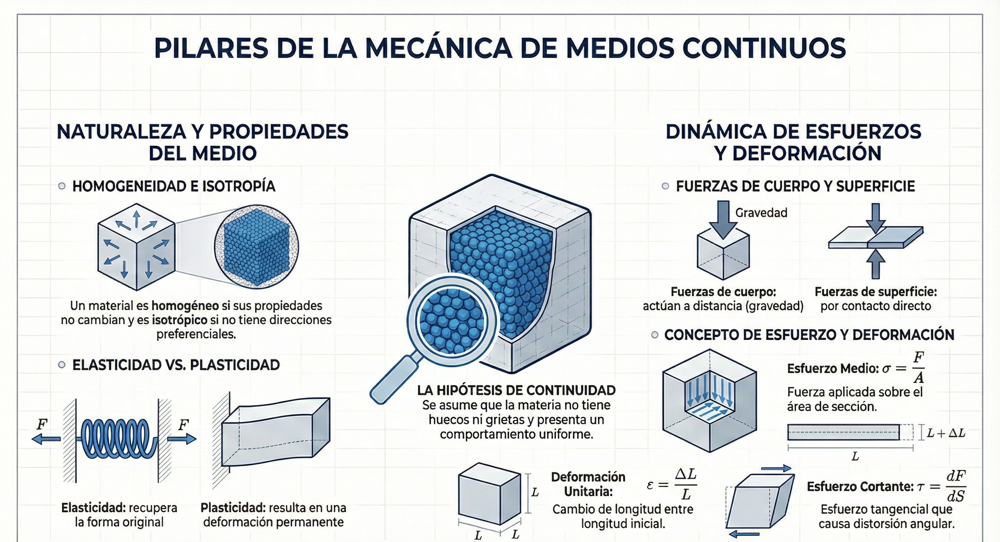

Unidad 3: Estado de Deformación
Descripción del movimiento, tensor de deformación, deformaciones infinitesimales y ecuaciones de compatibilidad.
Contenido de la Unidad
3.1 Descripción del movimiento
Cinemática del medio continuo: configuración de referencia y actual, campo de desplazamientos y descripción lagrangiana y euleriana del movimiento.
La cinemática del medio continuo estudia el movimiento y la deformación de la materia sin atender a las causas (fuerzas) que los producen, modelando al cuerpo material como una masa continua e infinitamente divisible. Para describir este comportamiento de forma rigurosa, se establece una correspondencia unívoca entre cada una de las partículas que constituye el medio continuo y la posición que ocupan en el espacio físico tridimensional en un instante determinado.
1. Configuraciones del medio continuo
Se define como configuración del medio continuo en un instante determinado \(t\) al lugar geométrico de las posiciones que ocupan en el espacio los puntos materiales del medio continuo en dicho instante, denotado por \(\Omega\) o \(\Omega_t\).
A. Configuración de referencia (inicial o material)
Es la configuración que ocupa el medio continuo en un instante de tiempo tomado como referencia, habitualmente \(t=t_0\) (o \(t=0\)), denotada por \(\Omega_0\).
Coordenadas materiales: el vector de posición de una partícula en la configuración de referencia viene dado por \(\mathbf{X}\). Sus componentes cartesianas \((X_1,X_2,X_3)\) se denominan coordenadas materiales. Estas coordenadas materiales sirven para identificar de manera unívoca a cada elemento diferencial del cuerpo bajo una referencia fija.
\[ \mathbf{X} = X_1\,\mathbf{e}_1 + X_2\,\mathbf{e}_2 + X_3\,\mathbf{e}_3 \]B. Configuración actual (espacial o actualizada)
Es el lugar geométrico que ocupan las partículas en el espacio físico en un instante de tiempo genérico \(t\) de interés, denotado por \(\Omega_t\).
Coordenadas espaciales: en esta configuración, la partícula situada originalmente en la posición material \(\mathbf{X}\) pasa a ocupar el punto espacial \(P'\) con un vector de posición \(\mathbf{x}\). A sus componentes cartesianas \((x_1,x_2,x_3)\) se las denomina coordenadas espaciales de la partícula en el instante de tiempo \(t\).
\[ \mathbf{x} = x_1\,\mathbf{e}_1 + x_2\,\mathbf{e}_2 + x_3\,\mathbf{e}_3 \]2. Ecuaciones de movimiento
El movimiento de las partículas del medio continuo se describe mediante la evolución de sus coordenadas espaciales o de su vector de posición a lo largo del tiempo. Matemáticamente, esto requiere conocer una función de trayectoria \(\boldsymbol{\phi}\) para cada partícula:
\[ \mathbf{x} = \boldsymbol{\phi}(\mathbf{X},t) \quad\Longleftrightarrow\quad x_i = \phi_i(X_1,X_2,X_3,t) \]Para garantizar la consistencia física del movimiento, la función de movimiento \(\boldsymbol{\phi}\) debe cumplir con las siguientes condiciones:
- Por definición: para el instante de referencia, la posición actual debe coincidir con la de referencia: \(\boldsymbol{\phi}(\mathbf{X},0)=\mathbf{X}\).
- Continuidad: la función \(\boldsymbol{\phi}\) debe ser continua y con derivadas primeras parciales continuas en todo punto e instante, lo que preserva físicamente la continuidad del material sin permitir la aparición de grietas o traslapes moleculares.
- Biunivocidad: debe existir una relación uno a uno; a cada punto del dominio le corresponde un único punto de la imagen y viceversa. Esto evita que dos partículas ocupen el mismo lugar en el espacio simultáneamente, o que una partícula esté en dos posiciones diferentes a la vez.
El jacobiano del movimiento
El determinante del gradiente de esta transformación (o jacobiano del movimiento, \(J\)) debe ser estrictamente positivo para asegurar la conservación de la masa en la configuración referencial y la invertibilidad del movimiento:
\[ J(\mathbf{X},t) = \det\Bigl(\frac{\partial\boldsymbol{\phi}}{\partial\mathbf{X}}\Bigr) > 0 \]Si se cumple esta condición, existen las ecuaciones de movimiento inversas, que expresan las coordenadas materiales en función de las espaciales y el tiempo:
\[ \mathbf{X} = \boldsymbol{\phi}^{-1}(\mathbf{x},t) \quad\Longleftrightarrow\quad X_i = \phi_i^{-1}(x_1,x_2,x_3,t) \]3. Campo de desplazamientos
Se define el vector desplazamiento (también llamado desalojamiento) de una partícula como la diferencia entre sus vectores de posición en la configuración actual y de referencia. Representa gráficamente el vector que une los puntos del espacio \(P\) (posición inicial) y \(P'\) (posición actual) de la partícula.
El desplazamiento de todas las partículas define el campo vectorial de desplazamientos, el cual se puede formular alternativamente de forma material o espacial:
- Campo de desplazamientos material \(\mathbf{U}(\mathbf{X},t)\): \[ \mathbf{U}(\mathbf{X},t) = \mathbf{x}(\mathbf{X},t) - \mathbf{X} \quad\Longleftrightarrow\quad U_i(X_j,t) = x_i(X_j,t) - X_i \]
- Campo de desplazamientos espacial \(\mathbf{u}(\mathbf{x},t)\): \[ \mathbf{u}(\mathbf{x},t) = \mathbf{x} - \mathbf{X}(\mathbf{x},t) \quad\Longleftrightarrow\quad u_i(x_j,t) = x_i - X_i(x_j,t) \]
4. Descripción lagrangiana y euleriana del movimiento
La descripción matemática de las propiedades físicas del medio continuo (tales como la densidad, la temperatura, la velocidad o el estado tensional) se clasifica en dos formas fundamentales según las variables que se adopten como argumentos independientes:
- Descripción material o lagrangiana: toma como variables independientes a la coordenada material de referencia \(\mathbf{X}\) y al tiempo \(t\). Una propiedad genérica \(\rho\) se describe como \(\rho=\rho(\mathbf{X},t)\). Físicamente, este enfoque consiste en seguir la trayectoria individual de cada partícula material, registrando la historia de sus cambios físicos. La descripción lagrangiana describe el comportamiento en función de una referencia fija, por lo que resulta sumamente útil y preferida en la Mecánica de Sólidos.
- Descripción espacial o euleriana: fija la atención en una dada región del espacio físico (volumen de control) y toma como variables independientes a la posición espacial \(\mathbf{x}\) y al tiempo \(t\). La propiedad se describe matemáticamente como \(\rho=\rho(\mathbf{x},t)\). Físicamente, este enfoque representa una «fotografía» o captura instantánea del flujo que cruza una región espacial determinada. Una coordenada espacial puede ser ocupada por diferentes partículas en diferentes instantes de tiempo. Dado que las velocidades y los flujos son las variables de principal interés en esta descripción, resulta el método estándar y más adecuado para la Mecánica de Fluidos.

3.2 Descripción matemática de la deformación
Gradiente de deformación, tensor de deformación de Green y de Almansi, y medidas de deformación en el medio continuo.
En la Mecánica de Medios Continuos, la deformación describe el cambio en las posiciones relativas de las partículas de un cuerpo material al transitar de una configuración a otra. A diferencia del movimiento rígido, que conserva distancias y ángulos, la deformación modifica las longitudes y la orientación de las líneas materiales dentro del medio.
Para analizar cuantitativamente este cambio geométrico, se definen tensores y medidas matemáticas que operan de forma local en el entorno diferencial de cada partícula.
1. El gradiente de deformación (\(\mathbf{F}\))
El gradiente de deformación (gradiente material de la deformación) es el tensor fundamental de la cinemática del continuo. Este operador lineal de segundo orden establece una correspondencia entre el vector material diferencial \(d\mathbf{X}\) (longitud \(dS\)) en la configuración de referencia y su respectivo vector espacial deformado \(d\mathbf{x}\) (longitud \(ds\)) en la configuración actual o actualizada:
\[ d\mathbf{x} = \mathbf{F}\cdot d\mathbf{X} \]Formulación y componentes
Si el movimiento del medio continuo está gobernado por las ecuaciones de trayectoria \(x_i=\phi_i(X_1,X_2,X_3,t)\), el diferencial de las posiciones actuales se obtiene aplicando la regla de la cadena respecto a las coordenadas materiales de referencia:
\[ dx_i = \frac{\partial x_i}{\partial X_j}\, dX_j = F_{ij}\, dX_j \]Por lo tanto, en un sistema de coordenadas cartesianas rectangulares, las componentes del tensor \(\mathbf{F}(\mathbf{X},t)\) corresponden a las derivadas parciales de las coordenadas actuales respecto a las iniciales:
\[ \mathbf{F} = \nabla_{\mathbf{X}}\otimes\mathbf{x} \quad\Longrightarrow\quad F_{ij} = \frac{\partial x_i}{\partial X_j} \] \[ \mathbf{F} = \begin{bmatrix} \dfrac{\partial x_1}{\partial X_1} & \dfrac{\partial x_1}{\partial X_2} & \dfrac{\partial x_1}{\partial X_3} \\[0.6em] \dfrac{\partial x_2}{\partial X_1} & \dfrac{\partial x_2}{\partial X_2} & \dfrac{\partial x_2}{\partial X_3} \\[0.6em] \dfrac{\partial x_3}{\partial X_1} & \dfrac{\partial x_3}{\partial X_2} & \dfrac{\partial x_3}{\partial X_3} \end{bmatrix} \]Propiedades fundamentales
- Invertibilidad: para que la transformación sea físicamente admisible (evitando que la materia se traslape o desaparezca), debe existir una relación biunívoca. Esto se garantiza si el determinante de \(\mathbf{F}\), denominado jacobiano del movimiento (\(J\)), es estrictamente positivo: \[ J = \det(\mathbf{F}) > 0 \]
- Conservación de la masa: el jacobiano rige el cambio volumétrico del medio, relacionando las densidades en las configuraciones de referencia (\(\rho_0\)) y actual (\(\rho\)) mediante la ley: \[ \rho = \frac{\rho_0}{J} \]
- Gradiente inverso (\(\mathbf{F}^{-1}\)): al ser invertible, se define el gradiente de deformación inverso o espacial, tal que \(d\mathbf{X}=\mathbf{F}^{-1}\cdot d\mathbf{x}\), con componentes asociadas a las derivadas de las variables materiales respecto a las espaciales: \[ F_{ij}^{-1} = \frac{\partial X_i}{\partial x_j} \]
2. El tensor de deformación de Green–Lagrange (\(\mathbf{E}\))
Para medir de manera objetiva la deformación de un cuerpo material, es necesario eliminar cualquier componente de rotación como cuerpo rígido. Esto se logra analizando el cambio en el cuadrado de las distancias de dos partículas infinitesimalmente vecinas al deformarse el medio.
Deducción matemática
La longitud al cuadrado del vector deformado \(d\mathbf{x}\) en la configuración actual se expresa como el producto punto del vector consigo mismo:
\[ ds^2 = d\mathbf{x}\cdot d\mathbf{x} = (\mathbf{F}\cdot d\mathbf{X})\cdot(\mathbf{F}\cdot d\mathbf{X}) = d\mathbf{X}\cdot(\mathbf{F}^{\mathrm{T}}\mathbf{F})\cdot d\mathbf{X} \]Se define el tensor de deformación de Cauchy–Green por derecha (\(\mathbf{C}\)) como:
\[ \mathbf{C} = \mathbf{F}^{\mathrm{T}}\mathbf{F} \quad\Longrightarrow\quad C_{ij} = F_{ki}F_{kj} = \frac{\partial x_k}{\partial X_i}\,\frac{\partial x_k}{\partial X_j} \]Restando el cuadrado de la longitud inicial en la configuración de referencia (\(dS^2=d\mathbf{X}\cdot d\mathbf{X}\)) se obtiene:
\[ ds^2 - dS^2 = d\mathbf{X}\cdot(\mathbf{C}-\mathbf{I})\cdot d\mathbf{X} = d\mathbf{X}\cdot(\mathbf{F}^{\mathrm{T}}\mathbf{F}-\mathbf{I})\cdot d\mathbf{X} \]El tensor material de deformación de Green–Lagrange (\(\mathbf{E}\)) se define de manera formal como la mitad de esta diferencia de métricas:
\[ \mathbf{E} = \tfrac{1}{2}(\mathbf{C}-\mathbf{I}) = \tfrac{1}{2}(\mathbf{F}^{\mathrm{T}}\mathbf{F}-\mathbf{I}) \]Componentes en función de los desplazamientos materiales
Dado que las coordenadas actuales se vinculan con el campo de desplazamientos materiales por la relación \(x_i=X_i+U_i\), las componentes de \(\mathbf{E}\) se pueden reescribir de manera explícita en función de las derivadas de \(\mathbf{U}\) respecto a la configuración de referencia:
\[ E_{ij} = \tfrac{1}{2}\Biggl( \frac{\partial U_i}{\partial X_j} + \frac{\partial U_j}{\partial X_i} + \frac{\partial U_k}{\partial X_i}\,\frac{\partial U_k}{\partial X_j} \Biggr) \]Este tensor es simétrico y describe de manera rigurosa estados de deformaciones finitas (grandes deformaciones) desde la perspectiva material o lagrangiana.
3. El tensor de deformación de Almansi (\(\mathbf{e}\))
Cuando el análisis del medio continuo se realiza fijando la atención en la configuración actual (perspectiva euleriana o espacial), el cambio en el cuadrado de las longitudes se parametriza respecto al diferencial espacial \(d\mathbf{x}\).
Deducción matemática
Expresando el diferencial material \(d\mathbf{X}\) en función de \(d\mathbf{x}\) a través del gradiente de deformación inverso (\(\mathbf{F}^{-1}\)):
\[ dS^2 = d\mathbf{X}\cdot d\mathbf{X} = (\mathbf{F}^{-1}\cdot d\mathbf{x})\cdot(\mathbf{F}^{-1}\cdot d\mathbf{x}) = d\mathbf{x}\cdot(\mathbf{F}^{-\mathrm{T}}\mathbf{F}^{-1})\cdot d\mathbf{x} \]Se define el tensor de deformación de Cauchy–Green por izquierda inverso (\(\mathbf{B}^{-1}\)) o tensor de Finger como:
\[ \mathbf{B}^{-1} = \mathbf{F}^{-\mathrm{T}}\mathbf{F}^{-1} \quad\Longrightarrow\quad B_{ij}^{-1} = F_{ki}^{-1} F_{kj}^{-1} = \frac{\partial X_k}{\partial x_i}\,\frac{\partial X_k}{\partial x_j} \]Planteando la diferencia de longitudes al cuadrado referida a la configuración actual:
\[ ds^2 - dS^2 = d\mathbf{x}\cdot(\mathbf{I}-\mathbf{B}^{-1})\cdot d\mathbf{x} \]Se define el tensor espacial de deformación de Almansi (\(\mathbf{e}\)) como:
\[ \mathbf{e} = \tfrac{1}{2}(\mathbf{I}-\mathbf{B}^{-1}) = \tfrac{1}{2}(\mathbf{I}-\mathbf{F}^{-\mathrm{T}}\mathbf{F}^{-1}) \]Componentes en función de los desplazamientos espaciales
Empleando el campo de desplazamientos espaciales \(u_i=x_i-X_i\), las componentes del tensor de Almansi se expresan como:
\[ e_{ij} = \tfrac{1}{2}\Biggl( \frac{\partial u_i}{\partial x_j} + \frac{\partial u_j}{\partial x_i} - \frac{\partial u_k}{\partial x_i}\,\frac{\partial u_k}{\partial x_j} \Biggr) \]Este tensor es simétrico y resulta de vital importancia para la formulación de ecuaciones constitutivas en la Mecánica de Fluidos y en problemas de sólidos con descripción espacial.
4. Medidas de deformación e interpretación física
A. La simplificación infinitesimal (pequeñas deformaciones)
Si los gradientes de desplazamiento son extremadamente pequeños (de manera que los productos de sus derivadas son magnitudes de orden superior despreciables), los tensores de Green–Lagrange y de Almansi se simplifican y coinciden numéricamente en el tensor de deformaciones infinitesimales (\(\boldsymbol{\varepsilon}\)):
\[ E_{ij} \approx e_{ij} \approx \varepsilon_{ij} = \tfrac{1}{2}\Biggl(\frac{\partial U_i}{\partial X_j} + \frac{\partial U_j}{\partial X_i}\Biggr) \]- Deformaciones lineales unitarias (\(\varepsilon_{11},\varepsilon_{22},\varepsilon_{33}\)): representan el cambio unitario de longitud (alargamiento o acortamiento) de segmentos materiales orientados en las direcciones de los ejes cartesianos.
- Deformaciones angulares unitarias (\(\gamma_{ij}\)): corresponden al cambio en el ángulo recto original entre dos líneas materiales ortogonales en el punto. Se relacionan con las componentes tangenciales del tensor mediante \(\gamma_{ij}=2\varepsilon_{ij}\) (para \(i\neq j\)).
B. Dilatación volumétrica infinitesimal (\(e\))
La variación unitaria de volumen del medio continuo (relación entre el cambio de volumen y el volumen inicial) se cuantifica mediante la traza del tensor de deformaciones infinitesimales:
\[ e = \frac{dV-dV_0}{dV_0} = \varepsilon_{ii} = \varepsilon_{11}+\varepsilon_{22}+\varepsilon_{33} = \mathrm{div}(\mathbf{U}) \]Esto demuestra que el primer invariante lineal del tensor de deformaciones representa físicamente la dilatación volumétrica local del medio continuo.
C. Teorema de descomposición polar
El gradiente de deformación \(\mathbf{F}\) contiene información tanto del estiramiento del material como de su rotación rígida local. El teorema de descomposición polar garantiza que \(\mathbf{F}\) se puede factorizar de forma única en un producto matricial:
\[ \mathbf{F} = \mathbf{R}\cdot\mathbf{U} = \mathbf{V}\cdot\mathbf{R} \]- \(\mathbf{R}\) es un tensor ortogonal que representa la rotación pura del cuerpo rígido local (preserva ángulos y longitudes).
- \(\mathbf{U}\) es el tensor simétrico de estiramiento por la derecha (material), relacionado con el tensor de Cauchy–Green por derecha mediante \(\mathbf{C}=\mathbf{U}^2\). Sus valores propios corresponden a los estiramientos principales del medio.
- \(\mathbf{V}\) es el tensor simétrico de estiramiento por la izquierda (espacial), que cumple con la relación \(\mathbf{B}=\mathbf{V}^2\).
3.3 Tensor de deformación para deformaciones infinitesimales y desplazamientos pequeños
Simplificación del tensor de deformación cuando los desplazamientos y sus gradientes son pequeños; tensor de deformación linealizado.
1. El gradiente de desplazamientos y su descomposición
Consideremos dos partículas vecinas, \(P\) y \(Q\), separadas por una distancia diferencial representada por el vector material \(d\mathbf{X}\) en la configuración de referencia. Al ocurrir un fenómeno de deformación, las partículas se desplazan y su separación en la configuración actual o actualizada pasa a estar definida por el vector espacial \(d\mathbf{x}\). La relación entre ambos vectores se expresa como:
\[ d\mathbf{x} = d\mathbf{X} + \nabla\mathbf{u}\cdot d\mathbf{X} \]Donde \(\nabla\mathbf{u}\) es un tensor de segundo orden denominado gradiente de desplazamientos. En coordenadas cartesianas tridimensionales, el gradiente de desplazamientos se representa mediante la matriz de derivadas parciales del campo de desplazamientos:
\[ \nabla\mathbf{u} = \begin{bmatrix} \dfrac{\partial u}{\partial X_1} & \dfrac{\partial u}{\partial X_2} & \dfrac{\partial u}{\partial X_3} \\[0.6em] \dfrac{\partial v}{\partial X_1} & \dfrac{\partial v}{\partial X_2} & \dfrac{\partial v}{\partial X_3} \\[0.6em] \dfrac{\partial w}{\partial X_1} & \dfrac{\partial w}{\partial X_2} & \dfrac{\partial w}{\partial X_3} \end{bmatrix} \]Bajo la consideración de desplazamientos pequeños, el gradiente de desplazamientos se puede descomponer aditivamente en una parte simétrica y una parte antisimétrica:
\[ \nabla\mathbf{u} = \boldsymbol{\varepsilon} + \boldsymbol{\Omega} \]- Parte simétrica (\(\boldsymbol{\varepsilon}\) o \(\mathbf{E}_1\)): se denomina tensor de deformación infinitesimal o linealizado. Este tensor caracteriza exclusivamente los cambios de longitud (deformación lineal) y de forma (distorsión angular) en las inmediaciones de un punto del medio continuo, eliminando los efectos de traslación rígida.
- Parte antisimétrica (\(\boldsymbol{\Omega}\) o \(\mathbf{E}_2\)): es el tensor de rotación infinitesimal. Representa la rotación local pura del elemento como si fuera un cuerpo rígido. Sus componentes son proporcionales al rotacional del vector de desplazamientos (vorticidad local) y describen los ángulos de giro respecto a los ejes coordenados de referencia. En el estudio de un cuerpo puramente deformable, el tensor rotacional se asume igual a cero para aislar el análisis de la deformación física.
2. Simplificación y linealización del tensor de deformación
En la formulación de deformaciones finitas (grandes deformaciones), los tensores de Green–Lagrange (\(\mathbf{E}\)) y de Almansi (\(\mathbf{e}\)) se calculan incluyendo términos cuadráticos del gradiente de desplazamientos para mantener la objetividad matemática ante grandes rotaciones:
\[ E_{ij} = \tfrac{1}{2}\Biggl( \frac{\partial u_i}{\partial X_j} + \frac{\partial u_j}{\partial X_i} + \frac{\partial u_m}{\partial X_i}\,\frac{\partial u_m}{\partial X_j} \Biggr) \]Sin embargo, cuando tanto los desplazamientos como sus gradientes son infinitesimales, las derivadas parciales del desplazamiento son extremadamente pequeñas (mucho menores a la unidad). En estas condiciones, los productos cruzados de las derivadas parciales (los términos cuadráticos \(\dfrac{\partial u_m}{\partial X_i}\,\dfrac{\partial u_m}{\partial X_j}\)) constituyen magnitudes de orden superior que resultan físicamente despreciables y se omiten del análisis.
Al linealizar la ecuación eliminando estos componentes de segundo orden, los tensores de deformación lagrangiano y euleriano se simplifican y coinciden numéricamente en el tensor de deformaciones infinitesimales (\(\boldsymbol{\varepsilon}\)):
\[ \varepsilon_{ij} \approx E_{ij} \approx e_{ij} = \tfrac{1}{2}\Biggl(\frac{\partial u_i}{\partial X_j} + \frac{\partial u_j}{\partial X_i}\Biggr) \]3.4 Deformaciones por rotación, deformación lineal y angular
Descomposición del gradiente de desplazamiento en parte simétrica (deformación) y antisimétrica (rotación); interpretación física de las componentes.
La descripción matemática y física de la deformación en el entorno de un punto se fundamenta en el análisis del gradiente de desplazamientos (o jacobiano de desalojamiento relativo), denotado como \(\nabla\mathbf{u}\) o \(\mathbf{J}_u\). Cuando los desplazamientos y sus gradientes son infinitesimales, este tensor de segundo orden se puede descomponer aditivamente en una parte simétrica y otra parte antisimétrica:
\[ \mathbf{J}_u = \mathbf{E} + \boldsymbol{\Omega} \]Donde \(\mathbf{E}\) (también representado como \(\mathbf{E}_1\) o \(\boldsymbol{\varepsilon}\)) constituye la matriz o tensor de deformación, mientras que \(\boldsymbol{\Omega}\) (o \(\mathbf{E}_2\)) representa la matriz o tensor rotacional.
1. La parte simétrica: tensor de deformación (\(\mathbf{E}\) o \(\boldsymbol{\varepsilon}\))
El tensor de deformación es una entidad matemática rigurosamente simétrica con respecto a su diagonal principal (\(E_{ij}=E_{ji}\)). En un sistema de coordenadas cartesianas, su expresión en notación de índices se define de la siguiente manera:
\[ \varepsilon_{ij} = \tfrac{1}{2}\Biggl(\frac{\partial u_i}{\partial X_j} + \frac{\partial u_j}{\partial X_i}\Biggr) \]Físicamente, este tensor caracteriza de forma exclusiva los cambios de longitud (elongaciones longitudinales) y los cambios de forma (distorsiones angulares) que ocurren en las vecindades de un punto material, eliminando cualquier efecto de traslación o rotación rígida.
Interpretación física de sus componentes
El tensor se estructura a partir de dos tipos de componentes con un significado geométrico directo:
-
Deformaciones lineales unitarias (diagonal principal: \(\varepsilon_{11}\), \(\varepsilon_{22}\), \(\varepsilon_{33}\) o \(e_x\), \(e_y\), \(e_z\)):
representan el cambio longitudinal unitario de segmentos de línea material que originalmente eran paralelos a los tres ejes coordenados de referencia.
- Signo: si el segmento material experimenta un alargamiento o elongación, la deformación lineal es positiva; si experimenta un acortamiento o contracción, es negativa.
-
Deformaciones angulares unitarias (fuera de la diagonal: \(\varepsilon_{ij}\) con \(i\neq j\)):
representan la mitad del cambio en el ángulo originalmente recto (\(90^\circ\)) formado por dos líneas materiales inicialmente ortogonales en el punto.
El cambio angular total se define como la distorsión angular (\(\gamma_{ij}\)), la cual se relaciona con las componentes del tensor mediante
\(\varepsilon_{ij}=\tfrac{1}{2}\gamma_{ij}\).
- Signo: de acuerdo con la regla de signos de la división para los desplazamientos de las partículas, el signo final de la deformación angular resulta positivo si el ángulo recto original tiende a cerrarse, y negativo si tiende a abrirse.
El caso de deformación nula (\(\mathbf{E}=\mathbf{0}\))
Si el tensor de deformación es igual a cero, todas sus componentes lineales y angulares se anulan. Bajo esta condición física, el elemento diferencial no sufre elongación ni distorsión alguna; el material se comporta como un cuerpo rígido y tiende únicamente a la rotación pura.
2. La parte antisimétrica: tensor de rotación (\(\boldsymbol{\Omega}\) o \(\mathbf{E}_2\))
El tensor rotacional es una matriz antisimétrica (lo que implica que posee ceros en su diagonal principal y valores opuestos en sus componentes simétricas: \(\Omega_{ij}=-\Omega_{ji}\)). Su formulación matemática en notación indicial viene dada por:
\[ \Omega_{ij} = \tfrac{1}{2}\Biggl(\frac{\partial u_i}{\partial X_j} - \frac{\partial u_j}{\partial X_i}\Biggr) \]Este tensor caracteriza de manera exclusiva la rotación infinitesimal de cuerpo rígido de la tríada de direcciones principales del material en el entorno del punto. Describe un movimiento que mantiene inalterados los ángulos y las distancias relativas de las partículas materiales, por lo que no induce deformación física.
Interpretación física de sus componentes
Los elementos fuera de la diagonal corresponden a los ángulos de rotación local del elemento alrededor de los ejes cartesianos de referencia. Por ejemplo, para un elemento en el plano \(xy\), la rotación media \(\theta\) alrededor del eje \(z\) equivale al promedio de los giros angulares de sus lados.
Debido a su antisimetría, el tensor tiene únicamente tres componentes independientes (tres grados de libertad). Esto permite representarlo vectorialmente mediante el vector de rotación infinitesimal (o vector dual \(\boldsymbol{\zeta}\) o \(\mathbf{g}\)), el cual es proporcional al rotacional del campo de desplazamientos:
\[ \boldsymbol{\zeta} = \tfrac{1}{2}(\nabla\times\mathbf{u}) \]El caso de rotación nula (\(\boldsymbol{\Omega}=\mathbf{0}\))
Cuando el tensor rotacional es igual a cero en el punto, el elemento diferencial tiende a deformarse sin experimentar rotación como cuerpo rígido. Dado que el estudio del movimiento y la rotación rígida son objeto de otras disciplinas, en la mecánica de los cuerpos deformables se asume de manera convencional que el tensor rotacional es igual a cero, aislando así el análisis de la deformación interna del material.
3.5 Deformaciones y direcciones principales
Cálculo de deformaciones principales y direcciones principales; interpretación física y relación con el tensor de deformación.
En el análisis cinemático de la Mecánica de Medios Continuos, el estado de deformación infinitesimal en un punto varía en función de la dirección en la que se mida la variación de distancia entre partículas vecinas. Para caracterizar de manera objetiva los límites geométricos de esta variación, se recurre al cálculo de las deformaciones principales y sus respectivas direcciones principales.
1. Interpretación física
Las deformaciones principales se definen físicamente como aquellas deformaciones normales unitarias que actúan en direcciones donde las deformaciones angulares (distorsiones o cizallamientos) son nulas.
- Deformación lineal pura: en una dirección principal, el vector de deformación angular es igual a cero, lo que implica que el vector de deformación resultante es estrictamente colineal al vector unitario de dirección. En consecuencia, las partículas situadas en estas líneas experimentan de forma exclusiva fenómenos de alargamiento o acortamiento lineal, sin distorsión de los ángulos rectos originales que forman con las otras direcciones principales.
- Valores extremos: al igual que en el estado de esfuerzos, las deformaciones principales representan los valores extremos (máximos y mínimos) de la deformación lineal en el punto bajo análisis.
- Direcciones y planos principales: las líneas materiales que coinciden con estas direcciones de distorsión nula se denominan direcciones principales de deformación, y los planos perpendiculares a ellas son los planos principales.
2. Relación con el tensor de deformación
Puesto que el tensor de deformación infinitesimal (\([\mathbf{E}]\) o \([\boldsymbol{\varepsilon}]\)) es un tensor simétrico real de segundo rango, su estructura matemática obedece las leyes de diagonalización espectral de los operadores lineales en el espacio tridimensional:
- Existencia de base ortonormal: para cualquier estado de deformaciones en un punto, siempre es posible elegir un sistema de coordenadas ortogonales (ejes principales) donde los componentes tangenciales de distorsión angular fuera de la diagonal principal desaparezcan.
- Representación diagonal: en dicha base coordenada principal, el tensor de deformación adopta una forma puramente diagonalizada, donde sus componentes corresponden directamente a las tres deformaciones principales del punto: \[ [\mathbf{E}]_p = \begin{bmatrix} \varepsilon_1 & 0 & 0 \\ 0 & \varepsilon_2 & 0 \\ 0 & 0 & \varepsilon_3 \end{bmatrix} \]
- Correspondencia de ejes: las direcciones principales de estiramiento del tensor material de Green–Lagrange (\([\mathbf{E}]\)) coinciden con las direcciones principales de estiramiento del tensor espacial de Almansi (\([\mathbf{e}]\)) para deformaciones infinitesimales y desplazamientos pequeños, compartiendo la misma base ortonormal.
3. Formulación matemática y método de cálculo
El planteamiento matemático para determinar las deformaciones y direcciones principales se formula como un problema de valores y vectores propios.
A. Ecuación de colinealidad
Si \(\mathbf{n}\) representa un vector unitario en una dirección principal, el vector de deformación asociado \(\mathbf{E}^{(n)}\) debe ser paralelo a \(\mathbf{n}\) con una magnitud escalar de deformación principal \(\varepsilon\). Utilizando el tensor de deformaciones \([\mathbf{E}]\) y la Delta de Kronecker (\(\delta_{ij}\)), se establece que:
\[ E_{ij}\, n_j = \varepsilon\, n_i \quad\Longrightarrow\quad \bigl(E_{ij} - \varepsilon\,\delta_{ij}\bigr)\, n_j = 0 \]Este sistema de ecuaciones algebraicas es homogéneo. Para asegurar una solución físicamente admisible distinta a la solución trivial (\(\mathbf{n}=\mathbf{0}\)), el determinante de la matriz de coeficientes debe ser idénticamente cero:
\[ \det\bigl(E_{ij} - \varepsilon\,\delta_{ij}\bigr) = 0 \] \[ \det \begin{bmatrix} E_{11}-\varepsilon & E_{12} & E_{13} \\ E_{21} & E_{22}-\varepsilon & E_{23} \\ E_{31} & E_{32} & E_{33}-\varepsilon \end{bmatrix} = 0 \]B. Polinomio característico e invariantes de la deformación
El desarrollo de este determinante tridimensional conduce a una ecuación cúbica conocida como el polinomio característico de la deformación:
\[ \varepsilon^3 - I_{1\varepsilon}\,\varepsilon^2 + I_{2\varepsilon}\,\varepsilon - I_{3\varepsilon} = 0 \]Los coeficientes del polinomio, denotados como \(I_{1\varepsilon}\), \(I_{2\varepsilon}\) e \(I_{3\varepsilon}\), representan los invariantes del tensor de deformación. Estas magnitudes escalares son independientes del sistema de coordenadas cartesianas utilizado para el análisis:
- Primer invariante (\(I_{1\varepsilon}\) — invariante lineal): corresponde a la traza del tensor. Representa físicamente el cambio unitario de volumen o dilatación volumétrica unitaria del elemento material (\(\delta=\mathrm{div}\,\mathbf{u}\)): \[ I_{1\varepsilon} = \mathrm{tr}(\mathbf{E}) = E_{ii} = E_{11} + E_{22} + E_{33} \]
- Segundo invariante (\(I_{2\varepsilon}\) — invariante cuadrático): \[ I_{2\varepsilon} = \tfrac{1}{2}\bigl(E_{ii}E_{jj} - E_{ij}E_{ji}\bigr) = E_{11}E_{22} + E_{22}E_{33} + E_{33}E_{11} - E_{12}^2 - E_{23}^2 - E_{31}^2 \]
- Tercer invariante (\(I_{3\varepsilon}\) — invariante cúbico): corresponde al determinante de la matriz que representa al tensor de deformaciones: \[ I_{3\varepsilon} = \det(E_{ij}) \]
Al resolver la ecuación de tercer grado, se obtienen tres raíces reales (gracias a la simetría del tensor), las cuales corresponden a las deformaciones principales, ordenadas de forma algebraica decreciente:
- \(\varepsilon_1\): deformación principal mayor (máximo alargamiento).
- \(\varepsilon_2\): deformación principal intermedia.
- \(\varepsilon_3\): deformación principal menor (máximo acortamiento).
C. Determinación de las direcciones principales
Para hallar el vector unitario \(\mathbf{n}^{(p)}\) que define la dirección principal de cada deformación principal \(\varepsilon_p\) (para \(p=1,2,3\)), se sustituye el valor propio correspondiente en el sistema homogéneo original:
\[ \bigl(E_{ij} - \varepsilon_p\,\delta_{ij}\bigr)\, n_j^{(p)} = 0 \]Dado que el determinante es cero, las ecuaciones son linealmente dependientes. Para obtener una solución única, se introduce de manera simultánea la ecuación de normalización del vector unitario (la suma del cuadrado de las componentes de dirección o cosenos directores es igual a la unidad):
\[ n_i^{(p)}\, n_i^{(p)} = 1 \quad\Longrightarrow\quad \bigl(n_1^{(p)}\bigr)^2 + \bigl(n_2^{(p)}\bigr)^2 + \bigl(n_3^{(p)}\bigr)^2 = 1 \]La resolución de este sistema acoplado para cada \(\varepsilon_p\) proporciona la terna de cosenos directores \((\cos\alpha_p,\cos\beta_p,\cos\gamma_p)\) que definen la dirección principal del \(p\)-ésimo valor de deformación en el espacio físico.
3.6 Ecuaciones de compatibilidad
Condiciones que deben cumplir las componentes del tensor de deformación para que exista un campo de desplazamientos continuo y diferenciable; ecuaciones de Saint-Venant.
En la cinemática de la Mecánica de Medios Continuos, el campo de deformaciones infinitesimales está definido por un tensor simétrico de segundo orden que consta de 6 componentes independientes (\(\varepsilon_{xx}\), \(\varepsilon_{yy}\), \(\varepsilon_{zz}\), \(\gamma_{xy}\), \(\gamma_{yz}\), \(\gamma_{zx}\)). Estas componentes se obtienen a partir de las derivadas parciales de las 3 componentes del vector de desplazamientos (\(u,v,w\)).
Puesto que el número de componentes de deformación (6) supera al de desplazamientos (3), no es posible proponer de manera arbitraria un campo de deformaciones y esperar que de él se derive un campo de desplazamientos físicamente admisible. Para garantizar que un campo de deformaciones dado corresponda a un campo de desplazamientos continuo, diferenciable y unívoco (evitando la aparición de grietas, traslapes o discontinuidades físicas en el material), se deben satisfacer rigurosamente las ecuaciones de compatibilidad o condiciones de integrabilidad.
1. El significado físico de la compatibilidad
Desde la perspectiva matemática, las ecuaciones de compatibilidad representan las condiciones bajo las cuales un sistema de ecuaciones diferenciales parciales para los desplazamientos posee solución. Si las componentes del tensor de deformación no satisfacen estas condiciones, el proceso de integración matemática para obtener el campo de desplazamientos dará resultados que dependen de la trayectoria de integración elegida, lo que daría lugar a desplazamientos multivaluados para un mismo punto físico, violando la continuidad del medio continuo.
2. Ecuaciones de compatibilidad para deformaciones infinitesimales (ecuaciones de Saint-Venant)
Para desplazamientos y deformaciones infinitesimales, existen 6 ecuaciones diferenciales de segundo orden independientes que gobiernan la compatibilidad de la deformación. Estas ecuaciones se pueden agrupar en dos familias fundamentales de tres ecuaciones cada una:
Grupo I: compatibilidad entre deformaciones lineales y distorsiones en planos coordenados
Estas ecuaciones relacionan las segundas derivadas espaciales de las deformaciones longitudinales con las derivadas cruzadas de las distorsiones angulares en los planos correspondientes:
- En el plano \(xy\) (o 1-2): \[ \frac{\partial^2\varepsilon_{xx}}{\partial y^2} + \frac{\partial^2\varepsilon_{yy}}{\partial x^2} = \frac{\partial^2\gamma_{xy}}{\partial x\,\partial y} \quad\Longleftrightarrow\quad \frac{\partial^2\varepsilon_{11}}{\partial X_2^2} + \frac{\partial^2\varepsilon_{22}}{\partial X_1^2} = 2\frac{\partial^2\varepsilon_{12}}{\partial X_1\,\partial X_2} \]
- En el plano \(yz\) (o 2-3): \[ \frac{\partial^2\varepsilon_{yy}}{\partial z^2} + \frac{\partial^2\varepsilon_{zz}}{\partial y^2} = \frac{\partial^2\gamma_{yz}}{\partial y\,\partial z} \quad\Longleftrightarrow\quad \frac{\partial^2\varepsilon_{22}}{\partial X_3^2} + \frac{\partial^2\varepsilon_{33}}{\partial X_2^2} = 2\frac{\partial^2\varepsilon_{23}}{\partial X_2\,\partial X_3} \]
- En el plano \(zx\) (o 3-1): \[ \frac{\partial^2\varepsilon_{zz}}{\partial x^2} + \frac{\partial^2\varepsilon_{xx}}{\partial z^2} = \frac{\partial^2\gamma_{zx}}{\partial z\,\partial x} \quad\Longleftrightarrow\quad \frac{\partial^2\varepsilon_{33}}{\partial X_1^2} + \frac{\partial^2\varepsilon_{11}}{\partial X_3^2} = 2\frac{\partial^2\varepsilon_{31}}{\partial X_3\,\partial X_1} \]
Grupo II: compatibilidad cruzada tridimensional
Estas ecuaciones aseguran que los giros tridimensionales del material mantengan la continuidad espacial, vinculando las deformaciones longitudinales con variaciones combinadas de las distorsiones angulares:
- Respecto al eje \(x\) (o dirección 1): \[ \frac{\partial^2\varepsilon_{xx}}{\partial y\,\partial z} = \tfrac{1}{2}\frac{\partial}{\partial x}\Biggl( -\frac{\partial\gamma_{yz}}{\partial x} + \frac{\partial\gamma_{zx}}{\partial y} + \frac{\partial\gamma_{xy}}{\partial z} \Biggr) \] \[ \frac{\partial^2\varepsilon_{11}}{\partial X_2\,\partial X_3} = \frac{\partial}{\partial X_1}\Biggl( -\frac{\partial\varepsilon_{23}}{\partial X_1} + \frac{\partial\varepsilon_{31}}{\partial X_2} + \frac{\partial\varepsilon_{12}}{\partial X_3} \Biggr) \]
- Respecto al eje \(y\) (o dirección 2): \[ \frac{\partial^2\varepsilon_{yy}}{\partial z\,\partial x} = \tfrac{1}{2}\frac{\partial}{\partial y}\Biggl( \frac{\partial\gamma_{yz}}{\partial x} - \frac{\partial\gamma_{zx}}{\partial y} + \frac{\partial\gamma_{xy}}{\partial z} \Biggr) \] \[ \frac{\partial^2\varepsilon_{22}}{\partial X_3\,\partial X_1} = \frac{\partial}{\partial X_2}\Biggl( \frac{\partial\varepsilon_{23}}{\partial X_1} - \frac{\partial\varepsilon_{31}}{\partial X_2} + \frac{\partial\varepsilon_{12}}{\partial X_3} \Biggr) \]
- Respecto al eje \(z\) (o dirección 3): \[ \frac{\partial^2\varepsilon_{zz}}{\partial x\,\partial y} = \tfrac{1}{2}\frac{\partial}{\partial z}\Biggl( \frac{\partial\gamma_{yz}}{\partial x} + \frac{\partial\gamma_{zx}}{\partial y} - \frac{\partial\gamma_{xy}}{\partial z} \Biggr) \] \[ \frac{\partial^2\varepsilon_{33}}{\partial X_1\,\partial X_2} = \frac{\partial}{\partial X_3}\Biggl( \frac{\partial\varepsilon_{23}}{\partial X_1} + \frac{\partial\varepsilon_{31}}{\partial X_2} - \frac{\partial\varepsilon_{12}}{\partial X_3} \Biggr) \]
Nota: en las formulaciones ingenieriles, se emplea la distorsión angular unitaria \(\gamma_{ij}=2\varepsilon_{ij}\) para \(i\neq j\).
3. El caso bidimensional: estado plano de deformación
En problemas donde las deformaciones ocurren únicamente en un plano (por ejemplo, el plano \(xy\), donde \(\varepsilon_{zz}=\gamma_{zx}=\gamma_{yz}=0\)), las seis ecuaciones de compatibilidad de Saint-Venant se reducen a una única ecuación diferencial gobernante:
\[ \frac{\partial^2\varepsilon_{xx}}{\partial y^2} + \frac{\partial^2\varepsilon_{yy}}{\partial x^2} = \frac{\partial^2\gamma_{xy}}{\partial x\,\partial y} \]Esta ecuación es de vital importancia en la resolución de problemas elásticos planos. Al aplicar la ley de Hooke para transformar esta condición cinemática en términos de esfuerzos, y combinándola con la definición de la función de esfuerzos de Airy (\(\phi\)), se demuestra que para que el estado plano de esfuerzos sea compatible, la función de Airy debe satisfacer la ecuación biarmónica:
\[ \nabla^2(\nabla^2\phi) = \nabla^4\phi = 0 \quad\Longrightarrow\quad \frac{\partial^4\phi}{\partial x^4} + 2\frac{\partial^4\phi}{\partial x^2\partial y^2} + \frac{\partial^4\phi}{\partial y^4} = 0 \]4. Extensión a grandes deformaciones (deformaciones finitas)
Cuando se analizan deformaciones finitas (mayores al 1%), no es posible utilizar la linealización de Saint-Venant debido a la influencia de los componentes de rotación y estiramiento finito. En este caso, el análisis de compatibilidad se formula a través del tensor de deformación euleriano (\(e_{ij}\)), requiriendo un acoplamiento no lineal de derivadas de segundo orden y productos de gradientes de deformación de la forma:
\[ \frac{\partial^2 e_{kn}}{\partial x_l\,\partial x_m} + \frac{\partial^2 e_{lm}}{\partial x_k\,\partial x_n} - \frac{\partial^2 e_{km}}{\partial x_l\,\partial x_n} - \frac{\partial^2 e_{ln}}{\partial x_k\,\partial x_m} + \cdots = 0 \]Al realizar la hipótesis de deformaciones infinitesimales, todos los productos de términos de orden superior se vuelven físicamente despreciables, lo que permite simplificar y recuperar de manera exacta las ecuaciones clásicas de Saint-Venant descritas en el apartado 2.